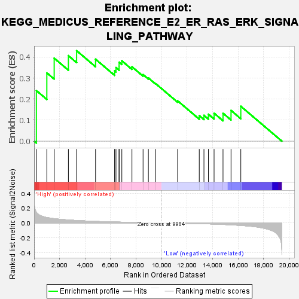
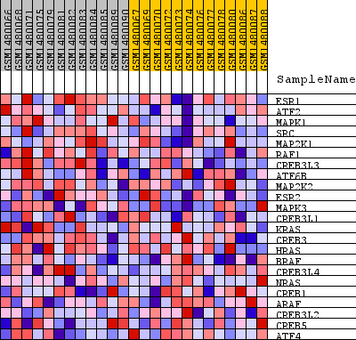
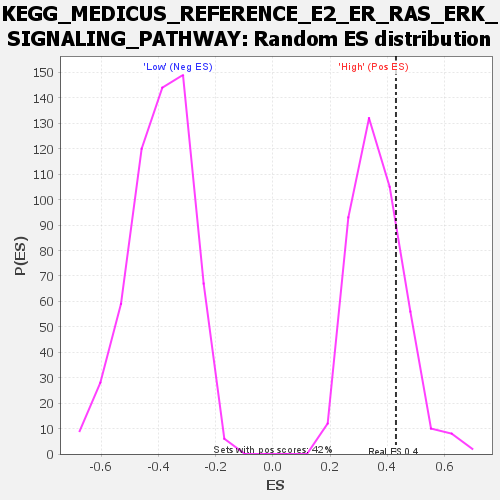

| Dataset | WG6v3.CPT1A.cls#High_versus_Low.CPT1A.cls#High_versus_Low_repos |
| Phenotype | CPT1A.cls#High_versus_Low_repos |
| Upregulated in class | High |
| GeneSet | KEGG_MEDICUS_REFERENCE_E2_ER_RAS_ERK_SIGNALING_PATHWAY |
| Enrichment Score (ES) | 0.4300919 |
| Normalized Enrichment Score (NES) | 1.1721003 |
| Nominal p-value | 0.22727273 |
| FDR q-value | 1.0 |
| FWER p-Value | 1.0 |

| SYMBOL | TITLE | RANK IN GENE LIST | RANK METRIC SCORE | RUNNING ES | CORE ENRICHMENT | |
|---|---|---|---|---|---|---|
| 1 | ESR1 | ESR1 | 179 | 0.143 | 0.2405 | Yes |
| 2 | ATF2 | ATF2 | 999 | 0.072 | 0.3247 | Yes |
| 3 | MAPK1 | MAPK1 | 1576 | 0.057 | 0.3945 | Yes |
| 4 | SRC | SRC | 2690 | 0.040 | 0.4064 | Yes |
| 5 | MAP2K1 | MAP2K1 | 3334 | 0.033 | 0.4301 | Yes |
| 6 | RAF1 | RAF1 | 4819 | 0.021 | 0.3896 | No |
| 7 | CREB3L3 | CREB3L3 | 6312 | 0.012 | 0.3343 | No |
| 8 | ATF6B | ATF6B | 6420 | 0.012 | 0.3496 | No |
| 9 | MAP2K2 | MAP2K2 | 6665 | 0.011 | 0.3561 | No |
| 10 | ESR2 | ESR2 | 6666 | 0.011 | 0.3752 | No |
| 11 | MAPK3 | MAPK3 | 6879 | 0.010 | 0.3819 | No |
| 12 | CREB3L1 | CREB3L1 | 7672 | 0.007 | 0.3537 | No |
| 13 | KRAS | KRAS | 8544 | 0.004 | 0.3164 | No |
| 14 | CREB3 | CREB3 | 8961 | 0.003 | 0.3004 | No |
| 15 | HRAS | HRAS | 9520 | 0.001 | 0.2741 | No |
| 16 | BRAF | BRAF | 11253 | -0.004 | 0.1918 | No |
| 17 | CREB3L4 | CREB3L4 | 12949 | -0.010 | 0.1216 | No |
| 18 | NRAS | NRAS | 13317 | -0.011 | 0.1227 | No |
| 19 | CREB1 | CREB1 | 13668 | -0.013 | 0.1279 | No |
| 20 | ARAF | ARAF | 14110 | -0.016 | 0.1328 | No |
| 21 | CREB3L2 | CREB3L2 | 14811 | -0.021 | 0.1327 | No |
| 22 | CREB5 | CREB5 | 15440 | -0.026 | 0.1461 | No |
| 23 | ATF4 | ATF4 | 16206 | -0.034 | 0.1658 | No |

